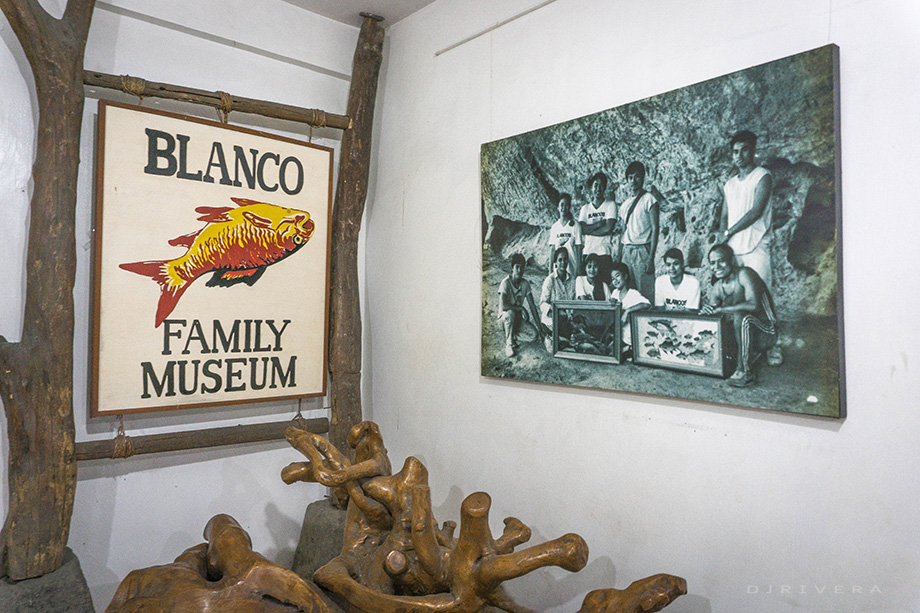
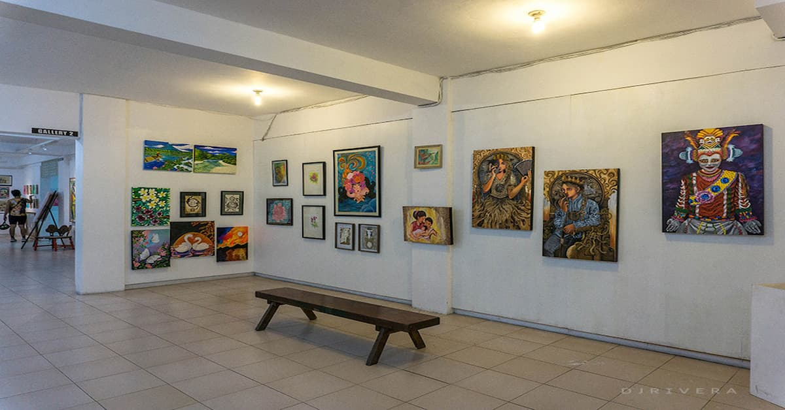
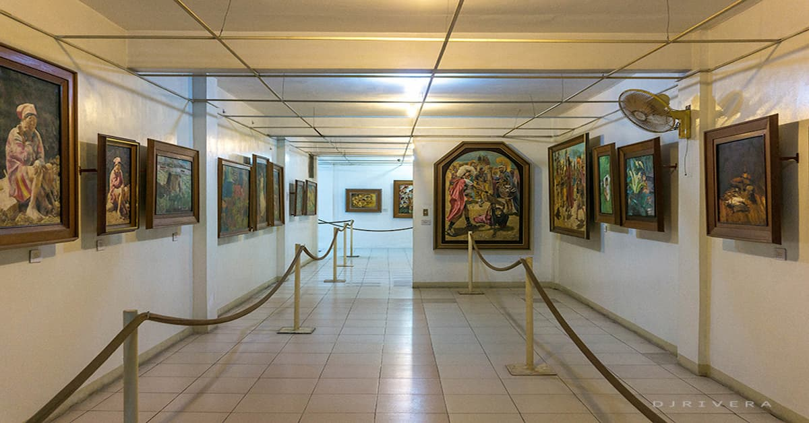
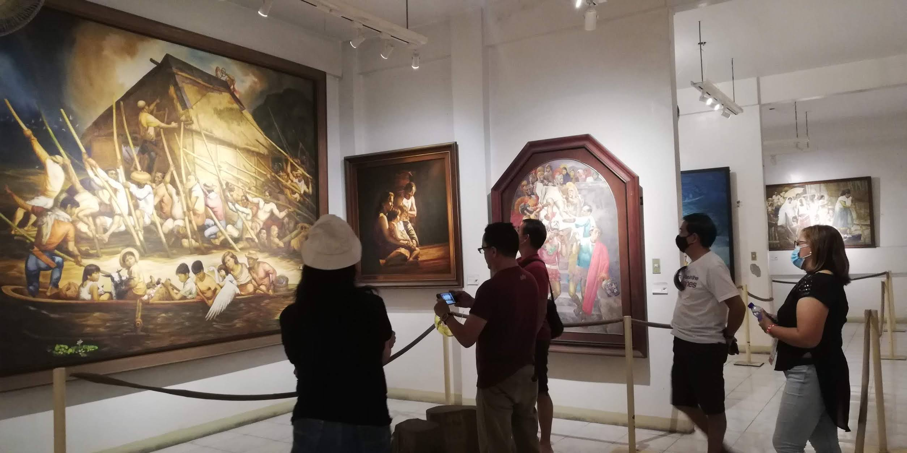

Location:
Ibañez St., Angono, Rizal.
Best for: Families, Realism Art Lovers, and Folklore Enthusiasts.
Vibe: Warm, Detailed, and Traditional.


Blanco Family Art Museum
The Masterpieces of Angono’s Most Famous Artistic Family.
The Blanco Family Art Museum is a unique testament to the idea that creativity is a shared legacy. This museum houses the life’s work of the late Jose "Pitok" Blanco, his wife Loring, and their seven children, all of whom are accomplished painters.
Ibañez St., Angono, Rizal.


